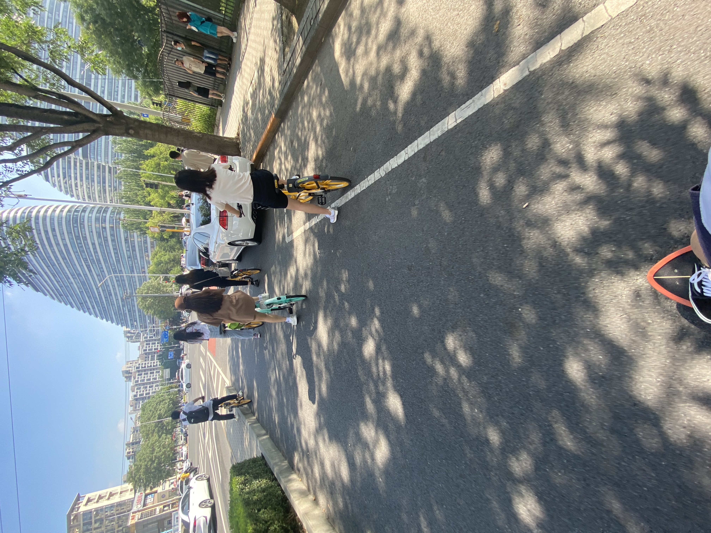
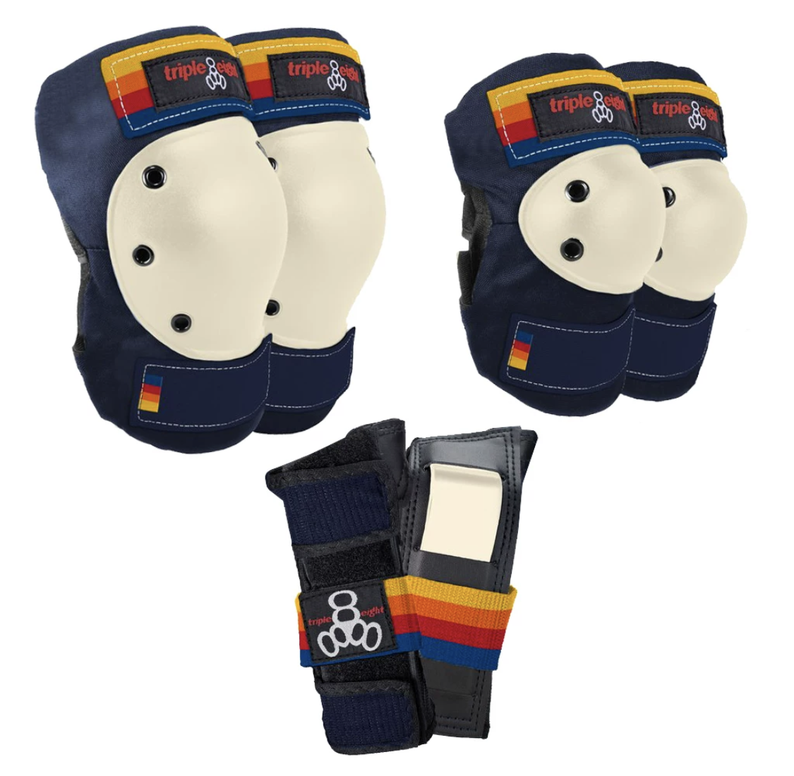

我是个无神论者，但是有时候也会在意一些外界给我启示，比如最近发生在自己身上的事。
众所周知，我在一个多月前开始玩陆冲，这周开始用陆冲代步上下班地铁站之间的通勤，为了轻装上阵就没有戴护具。

周三下班后，公司楼下的地面刚刚被擦地机器人打扫过，还有些潮湿，我当时注意到这个情况了，就比较小心单腿滑着走，结果还是打滑了，直接摔了个四仰八叉，不过伤的不重，扯了一下大腿，右手直撑地面的时候手腕顶了一下。当时我就在想要不要下次滑的时候戴上护具。是的，也只是想了一想，不然就不会有后文了。
昨天晚上，也就是周五下班出地铁后往家滑，天已经很黑了，路上有一块小半个砖头那么大的石头没有看到，板子直接冲了上去，石头卡住轮子，我也顺势飞了出去。正常来说陆冲是不用担心小石子的，因为它的轮子相对来说比较大，而且有可以容错的桥，但是那块石头太大了。
后果是把胳膊肘、膝盖擦破了，前两天刚刚顶过的手腕再次受到冲击，大拇指下边有个小软骨突了出来，一碰还很疼。我是由于板子突然停止，身体因为惯性飞了出去爬到地上的，手腕、胳膊、膝盖着地，但装在我背包里的玻璃饭盒还是被震的稀碎，可想而知力度有多大。不过最后还好，没有什么大碍，而且幸好是直着摔出去，落地的地方还是非机动车道，如果是斜着出去摔倒机动车道后果不堪设想，当时刚好有车在我旁边经过。
上天通过这种越来越严重的方式启示我注意安全、佩戴护具，我要敬畏他，以后出行一定要佩戴护具，不再抱有侥幸心理，而且我的护具也很漂亮，是一套复古风的护具。
